Coban est un logiciel pour les professionnels de
l'électricité.
Le principal objectif de ce logiciel est de rendre le choix de matériel plus
rapide, principalement lors de la rédaction d’un devis.
Son fonctionnement se veut le plus simple et le plus intuitif possible pour rester accessible à tous, même aux personnes ne maîtrisant pas beaucoup l'outil informatique.
Pour garder toute sa simplicité d'utilisation, Coban n'est pas conçu comme un logiciel de CALCUL, mais comme un logiciel d'ESTIMATION rapide et convivial.
Coban ne doit pas être utilisé pour réaliser des études précises où une garantie de résultat est demandée.
Coban se compose d'un lanceur principal permettant d'utiliser les différents modules de calcul.
Vous pouvez obtenir le code de déblocage sur le site www.sg-logiciels.fr.
Une fois votre code obtenu, il suffit de le rentrer grâce au menu "Aide > Enregistrement"
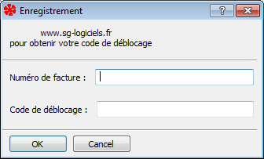
Le déblocage sera pris en compte au prochain démarrage de Coban.
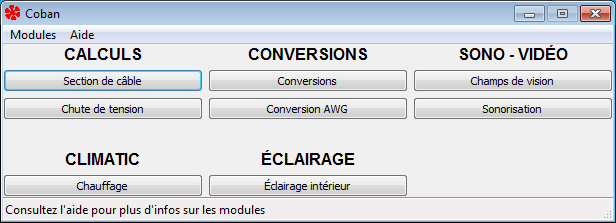
Cette fenêtre permet de regrouper et de lancer tout les modules de calcul de Coban.
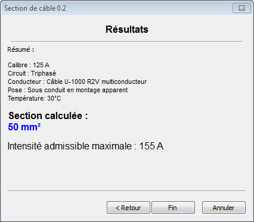
Ce module sert à définir la section minimale d'un câble en fonction :
Le résultat obtenu est la section minimale du conducteur ainsi que l'intensité maximale admissible dans le câble.
Attention : Ne pas oublier de vérifier la chute de tension à l'extrémité du câble (voir module "Chute de tension)
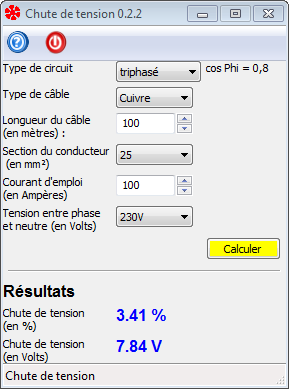
Une fois la section du câble déterminée, vous pouvez vérifier la chute de tension à l'extrémité de celui-ci.
| Éclairage | Autres usages | |
Alimentation entre disjoncteur de branchement |
2 % | |
Installations alimentées directement à partir d'un réseau |
3 % | 5 % |
| Installations alimentées à partir d'un poste HT/BT | 6 % | 8 % |
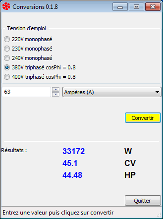
Le module Conversions permet de convertir la valeur entrée en :
Intensité (A), Puissance (W), Chevaux (CV) et Horse Power (HP)
Les formules utilisées sont :
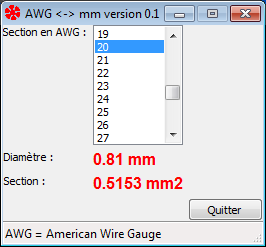
Ce module permet de convertir une section AWG (American Wire Gauge) en section en mm2 et diamètre en mm.
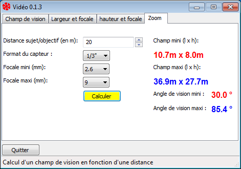
Ce module permet de définir la focale idéale en fonction du champ de vision
souhaité et de la distance de la caméra à la cible.
Inversement, il permet de définir le champ de vision en fonction de l'objectif
de la caméra et de la distance à la cible.
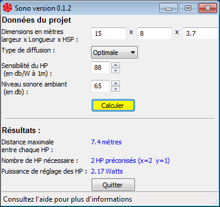
Ce module permet d'évaluer rapidement le nombre de "haut parleurs" et la puissance de réglage de chacun d'eux pour une pièce, en fonction du niveau sonore ambiant et du type de message à diffuser.
Le calcul est fait pour des HP de type "encastré de plafond" (à diffusion verticale).
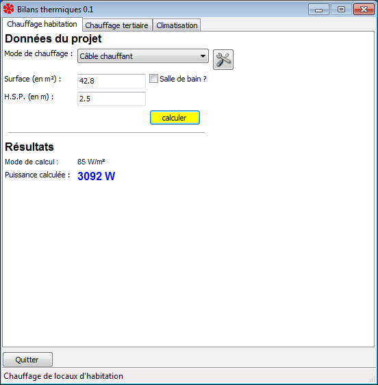
Ce module permet d'estimer rapidement la puissance nécessaire de chauffage à installer dans une pièce d'habitation.
Astuce :
Vous pouvez entrer directement dans le champ de saisie "surface" la longueur et la largeur de votre pièce (en mètres).
Par exemple "7,23*5.12" vous permettra de calculer la puissance nécessaire pour une pièce de 37m².
Ces valeurs sont modifiables grace au menu "Préférences -> Réglages".
Calcul de puissance pour des câbles chauffant :
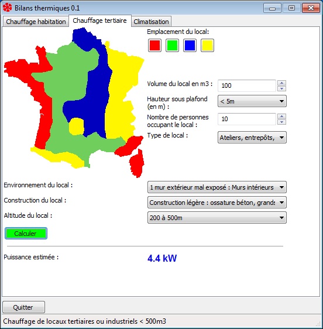
Ce module permet d'estimer la puissance nécessaire pour chauffer un local de type "bureau" ou "atelier".
L'estimation est réalisée en fonction de l'emplacement du local, de son exposition, de son isolation et du nombre de personnes occupant celui-ci.
Vous devez impérativement avant de lancer le calcul choisir la zone
géographique ou se situe ce local.
Le bouton "Calculer" se colore alors en fonction de la zone choisie.
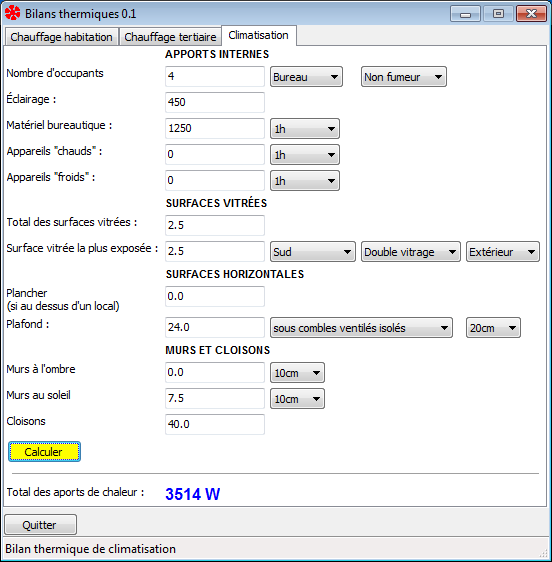
Attention : Ne pas utiliser ce module si des garanties précises de température ou d'hygrométrie sont demandées.
Les heures à retenir pour entrer les valeurs de calcul du bilan thermique sont :
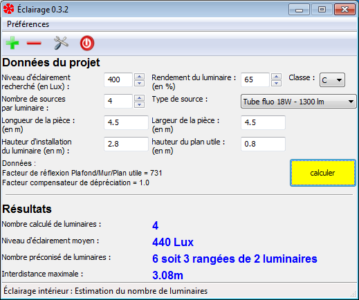
Ce module permet d'estimer le nombre minimal de luminaire à implanter dans un local en fonction du niveau d'éclairement recherché.
Une liste de sources est fournie avec ce module, mais vous êtes libre de
modifier cette liste et d'y ajouter vos propres sources.
Bien sûr, vous pouvez également supprimer les sources ou réinitialiser la liste
avec les sources par défaut fournies avec Coban.
Vous pouvez régler les paramètres suivants :
L'interdistance indiquée lors des résultats de calcul est la distance entre le centre de chaque appareil.
Par défaut, Coban choisit lui-même son répertoire de sauvegarde.
Lors de l'utilisation de répertoires utilisateurs personnalisés (par exemple sur serveur distant), il peut être nécessaire de spécifier le chemin de sauvegarde de Coban manuellement.
Dans ce cas, utilisez le menu "Aide > Préférences > Répertoire de sauvegarde" et choisissez le répertoire approprié.
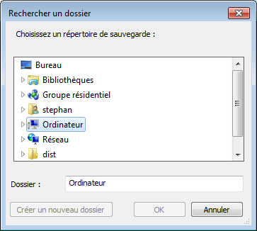
Les modifications seront prises en compte au prochain démarrage de Coban.
Par défaut, la notification automatique des mises à jour est activée.
Pour changer ce paramètre, allez dans le menu "Aide > Préférences" et cochez ou décochez le menu "Prévenir des mises à jour".
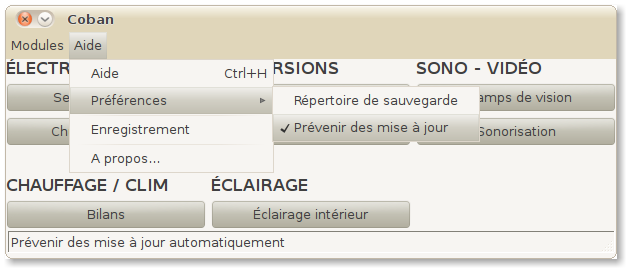
Les modifications seront prises en compte au prochain démarrage de Coban.